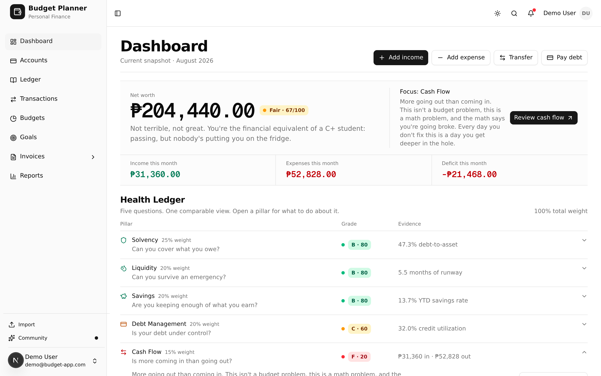

An instrument for your own money.
You log what moves. It reads five pillars of your finances and returns one calibrated score out of 100 — measured from your own entries, never estimated from a bank feed.
Fair
Sample figures, shown to explain the output. Your score is computed from what you log — nothing is estimated from a bank feed.
Calibrated on what you enter
No bank credentials, no aggregator holding a token to your account. You do the logging — that is the cost, and the reading is exact because of it.
Envelope budgets
A limit per category per month. Logged expenses move the envelope, so “what is left” is read from your ledger rather than estimated.
Unified transactions
Income, expenses, transfers between your own accounts, and payments toward a liability — one table, one filter set.
Savings goals
Link a goal to the account that holds the money. Progress comes from the balance, so it cannot drift.
CSV import with undo
Map your bank’s columns once. Duplicates flagged before they land, whole batch reversible in one action.
The instrument itself
A real screenshot on a demo account. The month is in deficit and the first line of the dashboard says so.



Bill a client in the same app
Budgeting tools do not invoice. Invoicing tools do not budget. More on invoicing.
Business identity
Your business name, address, tax ID and payment instructions, set once and applied to every invoice.
PDF and email
Send an invoice from the app, or export the PDF and send it yourself.
Logging the payment
When the money lands you record it as income. A deliberate step, not a background sync.
To be exact: invoices and transactions are co-located, not connected. Nothing marks itself paid behind your back.
Free to start
Everything on this page is free right now, with no credit card and no trial clock.
We won’t say “free forever”, because the AI advisor may cost money to run and we would rather not make a promise we might have to walk back. Any change gets announced on the changelog first.
One thing that isn’t built yet
An AI advisor that will read your own transactions and answer questions about them in plain language.
It is not live. There is a non-interactive preview on the dashboard so you can see the shape of it, and that is all it is today.
Take a reading.
Free to start. No credit card, no bank connection, no ads.